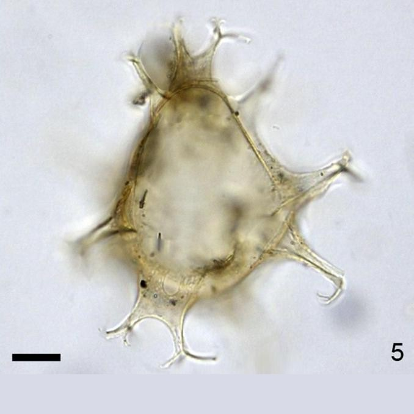
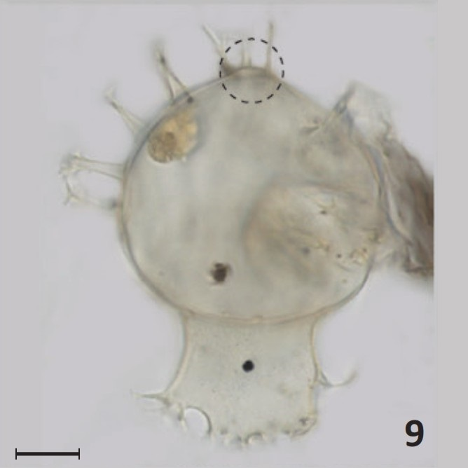

CYSTS LIST
- Alexandrium
- Archaeperidinium/RBSC
- Brigantedinium/Protoperidinium
- Diplopsalopsis/Protoperidinium
- Dubridinium
- Gymnodinium
- Impagidinium
- Lejeunecysta
- Nematosphaeropsis
- Peridinioids
- Polykrikos
- RBSC/Protoperidinium
- Selenopemphix
- Spiniferites
- Stelladinium
- Transparent/Hollow
- Transparent/Solid
- Transparent/Spherical
- Trinovantedinium
- Votadinium
SPINIFERITES
Shape |
Central body surface |
Remarks |
Species |
Central body (um.) |
Process length (um.) |
Image |
Ovoid |
Smooth to shagreenateThin wall |
Gonal and hollow processesFenestrations from branchlets of the bifurcate tips. |
Achomosphaeraandalousiensis | 40 to 50 (L)34 to 44 (W) |
14 to 26 |
|
Rhomboidal |
MicrogranularTwo layered |
ShapeNo fenestrationsTrifurcate parallel to wall |
Achomosphaeraramosasimilis | 38 x 50 to 33 x 42 |
13.3 to 16.7 |
|
TransparentCoarsely granulate |
SubsphericalSlightly cruciform |
Dextral torsionParatabulationVerrucate ornamentation |
Caspidinium rugosum | 48 (L)43 (W) |
Ornamented |
|
Spherical to ovoidal |
Smooth to slightly granular |
Robust. Gonal, hollow processesShorter processes often end bluntly |
Gonyaulaxbaltica | 35 to 49 (L)31 to 44 (W) |
2 to 5 |
|
OvoidApical boss |
Finely scabrateto granulate |
Broad processesTrifucarte pointed end |
Spiniferitesalaskensis | 26.2 to 36.8 (L)23.6 to 31.5 (W) |
7.5 to 12 |
|
Subsphericalto ovoidal |
Smooth, numerous invaginations |
Gonal processesMembranous stalksLong secondary branches |
Spiniferitesasperulus | 48 to 69 (L)45 to 64 (W) |
Less than 16 |
|
Pear-shapedApical boss |
Smooth tomicroreticulate |
Well-developed sutural membranes |
Spiniferitesbelerius | 35 to 42 or >45 |
7 to 10 (L)10 to 15 (L posterior) |
|
Pear-shapedApical bossLow sutural crest |
Smooth tomicroreticulate |
Pear-shaped.Apical bossLongest antapical processes |
Spiniferitesbentorii | 60 to 73 (L)45 to 63 (W) |
15 to 2025 (antapical) |
|
CruciformConcave sides |
- |
Flattenedcruciform-shaped.Concave sides |
Spiniferitescruciformis | 46 to 65 (L)34 to 56 (W) |
Less than 28 |
|
Subspherical to ovoid |
Microgranulate |
Radial fibersPetaloid tipsHigh sutural crests |
Spiniferitesdelicatus | 40 to 60 (L)35 to 54 (W) |
Less than 29 |
|
Elongate and ellipsoidal |
Smooth to finely microgranulate |
Elongate shapeGonal processes |
Spiniferiteselongatus | 40 to 59 (L)26 to 42 (W) |
6 to 12 (ap)12 to 16 (an)9 (lat) |
|
Rectangular elongatedAngular |
Smooth to microgranularMicropunctuate |
Rectangular elongatedAngular |
Spiniferitesfrigidus | 50 to 87 (L)18 to 50 (W) |
- |
- |
EllipsoidalSlightly ovoid |
Smooth or finely granulated |
Uniformly perforated parasutural ridgesOcassionaly trabeculae |
Spiniferiteshainanensis | 42.8 to 49 (L)35 to 42 (W) |
10.5 |
|
Spherical or globular |
Low septa |
NOT uniformly perforated parasutural ridges |
Spiniferiteshyperacanthus | 54 to 59 (D) |
13 to 20 (L) |
|
OvoidSmall apical boss |
Microgranulate to reticulate |
Ovoidal shapeApical bossElongate perforation at base |
Spiniferiteslazus | 44 to 58 (L)31 to 42 (W) |
- |
 |
OvoidEgg-shapedNo apical boss |
Numerous funnel-shaped invaginations |
Hollow processesNumerous invaginations onwall surface |
Spiniferitesludhamensis | 38 to 49 (D) |
10 to 15 |
|
OvoidalAntapical protrusion |
SmoothOuter wall microgranular |
Exclusively gonalHigh sutural membrane in antapex |
Spiniferitesmembranaceus | 34 to 44 (L)34 to 43 (W) |
12 to 172 to 21 (antapical flange) |
|
OvoidAntapical protrusion |
Smooth to granular |
Antapical flangeIntergonal processes |
Spiniferitesmirabilis | 40 to 70 (L)35 to 60 (W) |
15 to 22 |
 |
Pear-shapedApical boss |
Bubble-like elements |
Sutural septa and processes with bubble-like elements |
Spiniferitesmultisphaerus | 42.6 to 66.5 (D) |
1.5 to 8 |
|
Ovoid |
Microreticulate perforated |
Gonal processesJoined by most low sutural septa |
Spiniferitespachydermus | 33 to 54 (L)37 to 44 (W) |
- |
|
OvoidalAntapical protrusion |
Smooth, scabrate to microgranular |
Enlarged antapical processes |
Spiniferitespacificus | 30 to 35 (D) |
10.813.2 (antapical) |
|
Ovoidal2/3(cyst body)=process length |
Smooth |
Hollow and exclusively gonal |
Spiniferitesramosus | 30 to 46 (L)17 to 43 (W) |
1.2 to 12 |
|
Ovoidal to subsphericalWeak ridges, spiny processes in ridges |
Coarse to granular |
Spines in the middle of the ridgesWide basesTaper abruptly |
Spiniferitesspinatus | 38 (D)47 to 60 (L)35 to 56 (W) |
5 (processes)2 (spines) |
- |


GRAPHIC DIFFERENCES
Definitions and illustrations of the morphological terms and concepts used to describe Spiniferites taxa with intergonal processes. (Limoges et al., 2018, modified).
Schematic representations of the Pliocene and Quaternary Spiniferites species with intergonal processes, divided in two groups of taxa (see also Table 2): A) those with consistent intergonals, which include species characterized by intergonal processes on all sutures: Spiniferites hainanensis, Spiniferites hyperacanthus, Spiniferites mirabilis subsp. mirabilis and Spiniferites mirabilis subsp. serratus, and B) those with occasional intergonals, which correspond to the species on which intergonal processes are sometimes present, but rarely on all sutures. This group includes Spiniferites belerius, Spiniferites bentorii, Spiniferites pacificus, Spiniferites ludhamensis and Spiniferites multisphaerus. (Limoges et al., 2018, modified).
Identification key for Pliocene and Quaternary Spiniferites taxa bearing intergonal processes. (Limoges et al., 2018, modified).